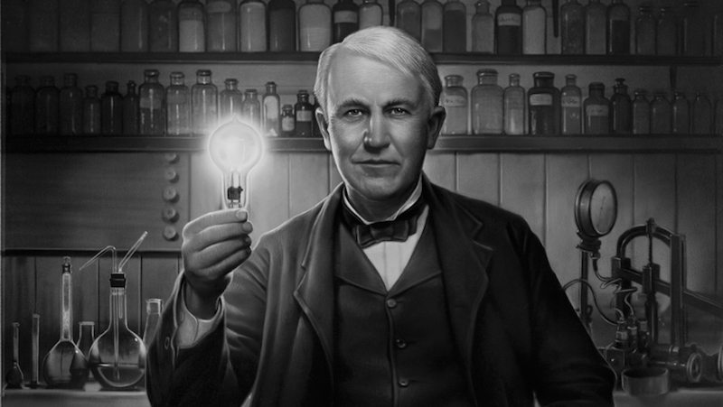

Do Re Mi What Fa Si Ti Doi Nemo Do Re Mi What Fa Si Ti Doi Nemo
E La Yo Na Ti Do Pa Pa Noah Do Re Mi What Fa Si Ti Doi Nemo
No way! Hey Hey, me ok! Do Re Mi What Fa Si Ti Doi Nemo
Let's Study About The Invention Of Light Bulb
Do You Know The Story Behind Invention Of Bulb
The invention of the light bulb is among the greatest inventions of mankind. It marked the beginning of an era of light as the world moved one step forward in eliminating the darkness inside closed areas. Oil chimneys, candles, and fireplaces were used in the old days. Still, bulb invention revolutionized the field of light. While Thomas Alva Edison is credited for bulb invention, it is not entirely true. Edison created the first commercially practical incandescent light. But he was not the first person to do so. As per historical records, nearly 20 inventors invented different versions of incandescent bulbs before Edison. The reason that Edison is credited for the invention is that his version was better than other versions. Edison's bulb not only was an effective incandescent material but also had a higher vacuum than others. Edison's bulb invention also had a high resistance that made the distribution of power more economical.
A Brief History of the Light Bulb
The electric light, one of the everyday conveniences that most affects our lives, was not “invented” in the traditional sense in 1879 by Thomas Alva Edison, although he could be said to have created the first commercially practical incandescent light. He was neither the first nor the only person trying to invent an incandescent light bulb. In fact, some historians claim there were over 20 inventors of incandescent lamps prior to Edison’s version. However, Edison is often credited with the invention because his version was able to outstrip the earlier versions because of a combination of three factors: an effective incandescent material, a higher vacuum than others were able to achieve and a high resistance that made power distribution from a centralized source economically viable. Early Light Bulbs In 1802, Humphry Davy invented the first electric light. He experimented with electricity and invented an electric battery. When he connected wires to his battery and a piece of carbon, the carbon glowed, producing light. His invention was known as the Electric Arc lamp. And while it produced light, it didn’t produce it for long and was much too bright for practical use. Over the next seven decades, other inventors also created “light bulbs” but no designs emerged for commerical application. More notably, in 1840, British scientist Warren de la Rue enclosed a coiled platinum filament in a vacuum tube and passed an electric current through it. The design was based on the concept that the high melting point of platinum would allow it to operate at high temperatures and that the evacuated chamber would contain fewer gas molecules to react with the platinum, improving its longevity. Although an efficient design, the cost of the platinum made it impractical for commercial production. In 1850 an English physicist named Joseph Wilson Swan created a “light bulb” by enclosing carbonized paper filaments in an evacuated glass bulb. And by 1860 he had a working prototype, but the lack of a good vacuum and an adequate supply of electricity resulted in a bulb whose lifetime was much too short to be considered an effective prodcer of light. However, in the 1870’s better vacuum pumps became available and Swan continued experiments on light bulbs. In 1878, Swan developed a longer lasting light bulb using a treated cotton thread that also removed the problem of early bulb blackening. On July 24, 1874 a Canadian patent was filed by a Toronto medical electrician named Henry Woodward and a colleague Mathew Evans. They built their lamps with different sizes and shapes of carbon rods held between electrodes in glass cylinders filled with nitrogen. Woodward and Evans attempted to commercialize their lamp, but were unsuccessful. They eventually sold their patent to Edison in 1879.